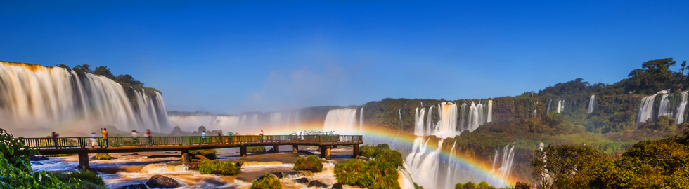
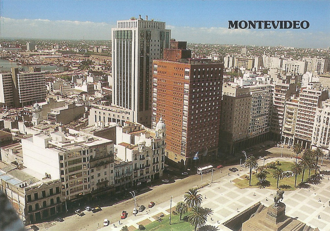
A two hour or so catamaran trip across the River Plate to Montevideo (capital of Uruguay) which had a strange, very-Third-World feeling to it. We had to move hotels after the first night as we were both covered with bed-bug bites from the original place. We saw the iconic Palacio Salvo which looked a bit like a retro Soviet space ship (now converted into luxury apartments) and some interesting shop facades.
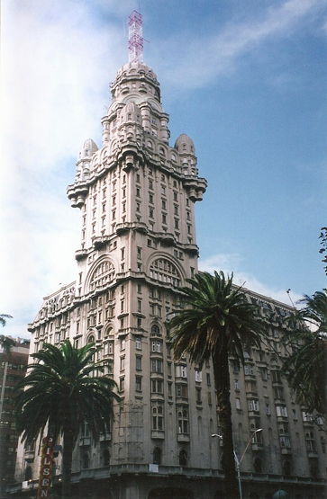
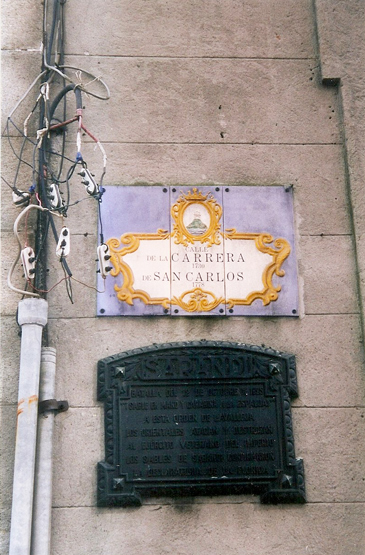
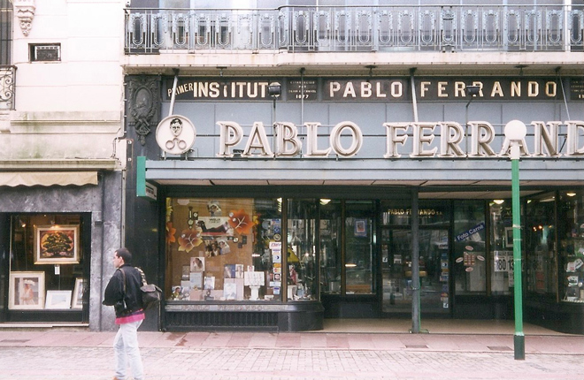
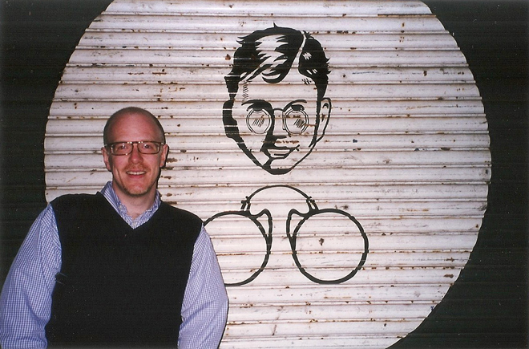
According to Wikipedia, Uruguay is ranked first in Latin America in democracy, peace, low perception of corruption and is first in South America when it comes to press freedom, size of the middle class and prosperity. On a per-capita basis, Uruguay contributes more troops to United Nations peacekeeping missions than any other country. It tops the rank of absence of terrorism, a unique position within South America.
It also boasts a very smart marching band, even if they are dwarfed by an ugly high-rise block with numerous air-conditioning units.
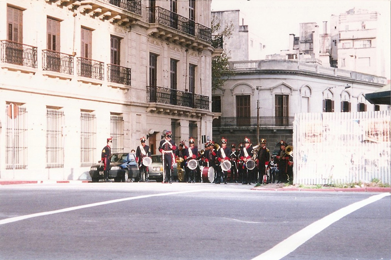
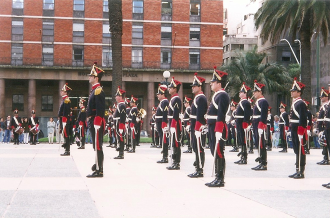
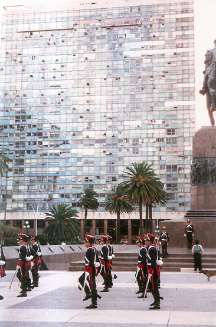
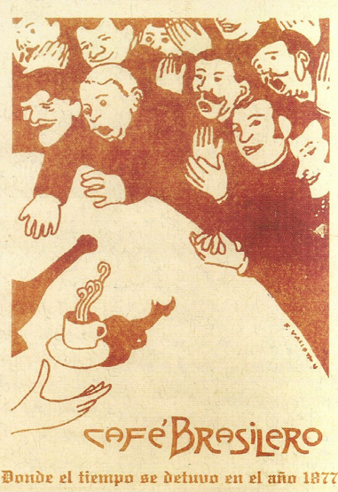
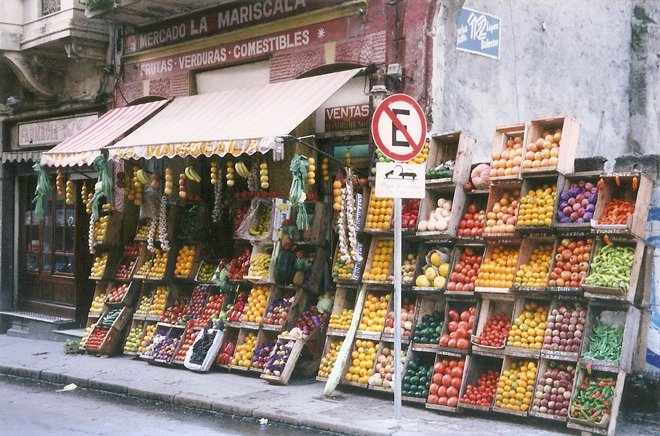
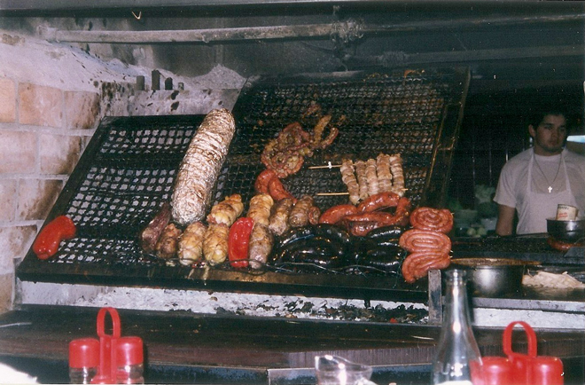